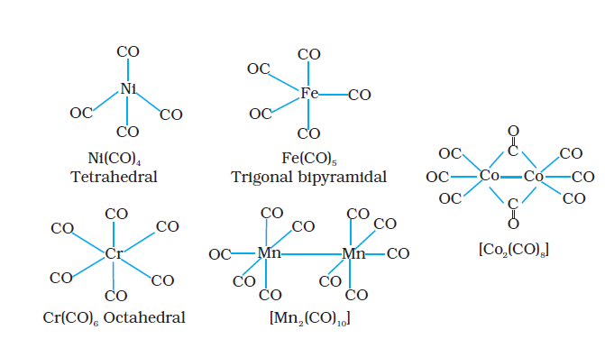
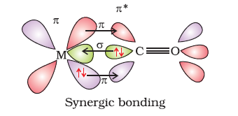

9.6 Bonding in Metal Carbonyls
The homoleptic carbonyls (compounds containing carbonyl ligands only) are formed by most of the transition metals. These carbonyls have simple, well defined structures. Tetracarbonylnickel(0) is tetrahedral, pentacarbonyliron(0) is trigonalbipyramidal while hexacarbonyl chromium(0) is octahedral.
Decacarbonyldimanganese(0) is made up of two square pyramidal Mn(CO)5 units joined by a Mn – Mn bond. Octacarbonyldicobalt(0) has a Co – Co bond bridged by two CO groups (Fig.9.13).

Fig. 9.13 Structures of some representative homoleptic metal carbonyls.
The metal-carbon bond in metal carbonyls possess both σ and π character. The M–C σ bond is formed by the donation of lone pair of electrons on the carbonyl carbon into a vacant orbital of the metal. The M–C π bond is formed by the donation of a pair of electrons from a filled d orbital of metal into the vacant antibonding π* orbital of carbon monoxide. The metal to ligand bonding creates a synergic effect which strengthens the bond between CO and the metal (Fig.9.14).

Fig. 9.14: Example of synergic bonding interactions in a carbonyl complex.